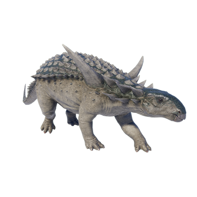

Useful Website
Sauropelta is a genus of herbivorous dinosaur native to North America, and is easily recognised thanks to the large spikes that extend from its neck. Due to its large size – weighing around 1.5 tonnes – Sauropelta cannot run at high speeds, so it relies on being able to defend itself from predators; as well as defensive spikes that can be used to repel attackers, it has thick armour covering most of its body – lending the genus its name, which translates to ‘lizard shield’.
